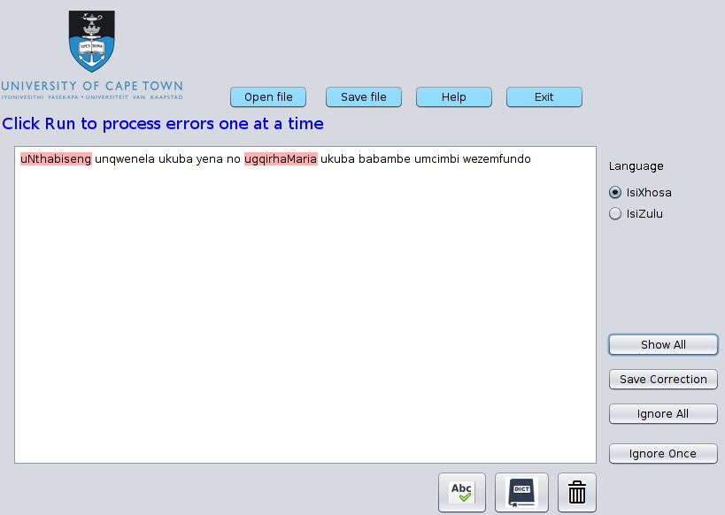

Rule-Based Error Detector
The Rule-based error detector for isiXhosa was implemented as a finite state transducer network, where we used the SFST-PL (a programming language for the tool SFST) which supports many different formats of regular expressions such as the ones used in grep, sed or Perl. Based on the morphology books we have developed rules for nouns, verbs, adjectives, pronouns and possessives. We have then used Java Swing for implementing the interface on the left.
Statistical based
The statistical based error detector for isiXhosa

IsiZulu Error Corrector
The Rule-based error detector for isiXhosa seasonal ingredients.
The Team
Project Supervisor
|
|
Project Downloads